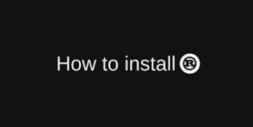
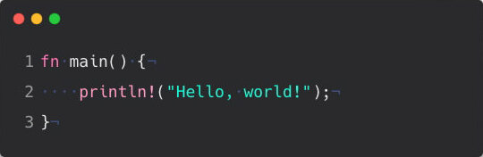
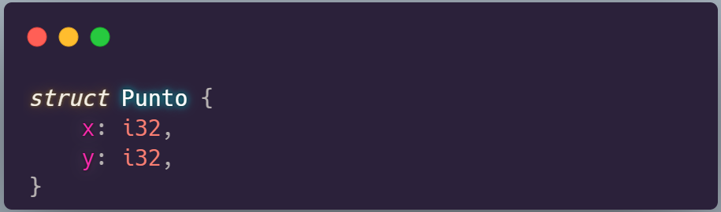

Presentación

Este libro ha sido realizado para la clase de Lenguajes de Programación 2022-1, Grupo 1.
En el menú que se encuentra a la izquierda, encontrarán el temario general del tutorial, iniciando con la presentación del lenguaje, su historia, importancia y aplicaciones más importantes.
Posteriormente, indicamos los primeros pasos para desarrollar en Rust tales como su instalación, programas básicos como Hola Mundo y su administrador de paquetes o librerías Cargo. De ahí en adelante, abordamos las generalidades y nociones básicas que el lector debe tener en cuenta para programar en Rust y finalizamos con algunos temas cruciales como las estructuras de datos y la implementación de la concurrencia.
En la última sección se encuentran las referencias usadas para el desarrollo de la presentación y de este libro.
Autores
Nuestro grupo está conformado por:
- Brayan David León Sanabria
- Carlos Augusto Gutiérrez Silva
- Cristian David Sainea Céspedes
- Diego Felipe Sánchez Medina
Para tener en cuenta
Los ejemplos mostrados en el libro se encuentran en celdas de código ejecutables, de esta manera el lector podrá ver los resultados de la ejecución de manera inmediata en el navegador sin necesidad de realizar ninguna instalación adicional.
Las celdas que contienen los ejemplos no son editables, sin embargo, añadimos una sección de libre edición para la libre práctica del lenguaje por parte del lector. Puedes encontrarla aquí
Rust
Es un lenguaje diseñado para el rendimiento y la seguridad, especialmente la concurrencia segura. Rust es conocido por hacer cumplir la seguridad de la memoria, es decir, que todas las referencias apuntan a una memoria válida, sin requerir el uso de un recolector de basura o el recuento de referencias. La seguridad de la memoria se aplica mediante un "verificador de préstamo", que rastrea la vida útil del objeto y el alcance variable a medida que las referencias se pasan a través del programa durante la compilación.
Rust es un lenguaje de programación de propósito general, es considerado multiparadigma y puede ser clasificado como:
Además se puede utilizar para la programación de sistemas con mecanismos para la gestión de memoria de bajo nivel, pero también ofrece características de alto nivel como la programación funcional.
Historia
- Rust comenzó en 2006 como un proyecto paralelo de Graydon Hoare, un empleado de Mozilla.
- En poco tiempo, Mozilla vio el potencial del nuevo lenguaje y comenzó a patrocinarlo en 2009, antes de revelarlo al mundo en 2010.
- La primera versión estable de Rust fue lanzada el 15 de mayo de 2015.
- En agosto de 2020, Mozilla despidió 250 empleados para reestructurar internamente la compañia a causa de la pandemia del Covid-19. Entre ellos, el equipo Servo (un motor de renderizado web escrito en Rust). Esto creó preocupación sobre el futuro de Rust, pues varios de estos empleados contribuian activamente al lenguaje.
- La siguiente semana, el equipo desarollador central de Rust confirmó el impacto que habían causado los despidos al lenguaje, tomando la deicisión de entregar los dominios y la propiedad completa del mismo a la fundación Rust
- El 8 de Febrero de 2021 se anunció la creación formal de la fundación Rust conformada por AWS, Huawei, Google, Microsoft y Mozilla

- En abril del 2021, Google anunció la compatibilidad con Rust dentro del proyecto de código abierto de Android, como alternativa a C/C++
Origen del nombre
Una posible fuente del nombre, según Hoare, es el hongo Rust, o en español hongo roya. En varias ocaciones Graydon ha sido cuestionado por el origen de este nombre, quien siempre responde que aunque pueden ser varias las razones que lo llevaron a nombrar el lenguaje de programación de esta manera, la principal es que los hongos Rust son sorprendemente robustos, son organismos distribuidos y pueden alternar entre diferentes anfitriones, como si funcionaran en paralelo.
Aceptación
A pesar de su relativa juventud, Rust ha ascendido constantemente en las filas de los lenguajes de programación populares. De hecho, mientras ocupaba el puesto 33 en julio de 2019, en julio de 2020 había subido al puesto 18 en el Índice de la comunidad de programación de TIOBE. Del mismo modo, según la Encuesta de desarrolladores de Stack Overflow , Rust ha sido el lenguaje "más querido" cada año desde 2016 hasta 2022.
Características
Desempeño
Rust es increíblemente rápido y eficiente en cuanto a memoria: sin tiempo de ejecución ni recolector de elementos no utilizados, puede potenciar servicios críticos para el rendimiento, ejecutarse en dispositivos integrados e integrarse fácilmente con otros lenguajes.
Fiabilidad
El sistema de tipo enriquecido y el modelo de propiedad de Rust garantizan la seguridad de la memoria y de los subprocesos, lo que le permite eliminar muchas clases de errores en tiempo de compilación.
Productividad
Rust tiene una excelente documentación, un compilador amigable con mensajes de error útiles y herramientas de primer nivel: un administrador de paquetes integrado y una herramienta de compilación, soporte inteligente para múltiples editores con autocompletado e inspecciones de tipos, un formateador automático y más.
Concurrencia
Rust maneja muy bien la concurrencia, ya que su modelo de propiedad y la verificación de tipos le permiten asegurarse de que cualquier error que ocurra debido a la concurrencia sea un error de tiempo de compilación y, por lo tanto, permite a los desarrolladores corregir el código mientras trabajan en él, en lugar de trabajar potencialmente. en él después de haber sido enviado a producción.

Prueba Rust
Practica los conceptos del tutorial en esta celda editable!!
\(ᵔᵕᵔ)/
fn main() { println!("Usa este editor de prueba de manera libre :D"); }
Introducción
En este capítulo, discutiremos:
- Instalación de Rust en Linux, macOS y Windows 
- Escribir un programa que imprima ¡Hola, mundo! 
Instalación
El primer paso es descargar Rust a través de 'rustup', una herramienta de línea de comandos para administrar versiones de Rust y las herramientas relacionadas.
Nota: Si prefieres no usar
rustuppor alguna razón, puedes consultar: Otros medios de instalación para más opciones.
A través de los siguientes pasos se explica como instalar la versión estable más reciente del compilador de Rust. Esto garantiza que todos los ejemplos en el libro seguirán compilando con versiones de Rust más nuevas. La salida podría diferir ligeramente debido a que Rust usualmente implementa mensajes de error y avisos para versiones previas.
Instalando rustup en Linux o macOS
Si estás usando Linux o macOS, se debe abrir la terminal e ingresar el siguiente comando:
$ curl --proto '=https' --tlsv1.3 https://sh.rustup.rs -sSf | sh
Esto descarga un script e inicia la instalación de la herramienta rustup, la cual instala la versión estable más reciente de Rust. Si la instalación es exitosa, aparecerá el siguiente mensaje en consola:
Rust is installed now. Great!
También necesitará un "Linker", el cual es un programa que usa Rust para juntar sus salidas compiladas en un solo archivo. Si tienes errores con el Linker, se deberían solucionar instalando un compilador de C, el cual usualmente incluye un Linker.
Instalando rustup en Windows
En Windows, ve a https://www.rust-lang.org/tools/install y sigue las instrucciones para instalar Rust. En algún punto de la instalación, recibirás un mensaje explicando que también es necesario instalar "C++ build tools" para Visual Studio 2013 o versiones posteriores. Es posible realizar esta instalación siguiendo las instrucciones descritas en el siguiente enlace: Build Tools for Visual Studio 2019.
El resto de este libro usa comandos que funcionarán tanto en cmd.exe como en PowerShell
Comprobando, Actualizando y desinstalando
Luego de la instalación, puedes comprobar el funcionamiento correcto de Rust ejecutando el siguiente comando en consola:
$ rustc --version
Deberías ver, como respuesta, el número de la versión junto con algunos datos adicionales en el siguiente formato:
rustc x.y.z (abcabcabc yyyy-mm-dd)
Si ves esta información, has instalado Rust satisfactoriamente! En caso contrario, debes verificar que Rust está en la variable de sistema %PATH% o si requieres de ayuda adicional, puedes visitar los foros de ayuda para principiantes que se encuentran en los siguientes enlaces:
Posteriormente, puedes actualizar Rust a su última versión a través del comando:
$ rustup update
Finalmente, si requieres desinstalar Rust y rustup, debes ejecutar el siguiente script desde la consola:
$ rustup self uninstall
Hola Mundo
Ya que Rust se ha instalado, podemos iniciar programando el tradicional Hola Mundo como programa de prueba.
Escribiendo y corriendo el primer programa de Rust
Posterior a la creación del directorio, se debe crear un archivo fuente, al que nombraremos main.rs. Los archivos de Rust siempre terminan con la extensión .rs
En el archivo creado, escribiremos el código de la siguiente manera:
fn main() { println!("Hola, mundo!"); }
Prestemos atención a la sintaxis básica del lenguaje.
Generalidades
Este capítulo cubre conceptos que aparecen en casi todos los lenguajes de programación y cómo funcionan en Rust. Ninguno de los conceptos presentados en este capítulo es exclusivo de Rust, pero los discutiremos en el contexto de Rust y explicaremos las convenciones sobre el uso de estos conceptos.
Palabras clave
El lenguaje Rust tiene un conjunto de palabras clave que están reservadas para uso exclusivo del lenguaje, al igual que en otros lenguajes. Tenga en cuenta que no puede usar estas palabras como nombres de variables o funciones. La mayoría de las palabras clave tienen significados especiales y las usará para realizar varias tareas en sus programas Rust; algunos no tienen una funcionalidad actual asociada con ellos, pero se han reservado para la funcionalidad que podría agregarse a Rust en el futuro. Puede encontrar una lista de las palabras clave en el Apéndice A.
Variables y mutabilidad
Por defecto, las variables en Rust son inmutables, lo que quiere decir que una vez que un valor está vinculado a un nombre, no puede cambiar ese valor. Este es uno de los muchos beneficios que da Rust para escribir código de una manera que se aproveche la seguridad y la fácil concurrencia. Sin embargo, aún tiene la opción de hacer que sus variables sean mutables.
Ejemplo declaración de variables
fn main() { let x = 5; println!("El valor de x es: {}", x); //x = 6; //println!("El valor de x es: {}", x); }
Ejemplo declaración de variables mutables
fn main() { let mut x = 5; println!("El valor de x es: {}", x); x = 6; println!("El valor de x es: {}", x); }
Constantes
Las constantes también son valores que están vinculados a un nombre y no se les permite cambiar, pero hay algunas diferencias entre constantes y variables.
- No se permite usar mut
- Se debe indicar el tipo de dato al momento de declararla
- Se pueden declarar en cualquier ámbito, incluido el ámbito local (alcance)
- Solo pueden declararse formalmente, no como resultado de un valor calculado en timpo de ejecución
const TRES_HORAS_EN_SEGUNDOS: u32 = 60 * 60 * 3;
Shadowing
Este término se refiere a cuando una variable se declara con el mismo nombre de una variable previamente creada.
fn main() { let x = 5; let x = x + 1; { let x = x * 2; println!("El valor de x en el alcance interno es: {}", x); } println!("El valor de x es: {}", x); }
Es importante reconocer la diferencia entre mutabilidad y shadowing, debido a que efectivamente estamos creando una nueva variable cuando usamos let nuevamente, y no sobreescribiendo la variable anterior.
Tipos de datos
Cada valor en Rust es de un cierto tipo, lo cual le dice a Rust qué tipo de dato se está especificando para que sepa cómo trabajar con esos datos.
Debemos tener en cuenta que Rust es un lenguaje de tipado estático, esto significa que debe conocer los tipos de todas las variables en el momento de la compilación. El compilador generalmente puede inferir qué tipo queremos usar en función del valor y cómo lo usamos.
Veremos dos subconjuntos de tipos de datos: escalares y compuestos.
Tipos escalares
Un tipo escalar representa un valor único. Rust tiene cuatro tipos escalares principales: enteros, números de punto flotante, booleanos y caracteres.
Tipos enteros
Un número entero es un número sin un componente fraccionario. En Rust es importante indicar el tamaño que este entero ocupará y si lleva signo o no. Las siguientes variantes son validas para usarse en la declaración de un entero:
| Length | Signed | Unsigned |
|---|---|---|
| 8-bit | i8 | u8 |
| 16-bit | i16 | u16 |
| 32-bit | i32 | u32 |
| 64-bit | i64 | u64 |
| 128-bit | i128 | u128 |
| arch | isize | usize |
Tipos de puntos flotantes
Rust también tiene dos tipos primitivos para números de coma flotante. Los tipos de coma flotante de Rust son f32 y f64, que tienen un tamaño de 32 bits y 64 bits, respectivamente. Todos los números de tipo punto flotante tienen signo.
fn main() { let x = 2.0; // f64 por defecto let y: f32 = 3.0; // f32 }
Recordar que, como en muchos otros lenguajes, Rust permite realizar operaciones matemáticas básicas tales como
- Suma +
- Resta -
- Multiplicación *
- División /
- Módulo %
El tipo booleano
Los booleanos tienen un tamaño de un byte. El tipo booleano en Rust se especifica mediante bool
fn main() { let t = true; let f: bool = false; // con tipado de tipo explícito }
El tipo caracter
char de Rust es el tipo alfabético más primitivo del lenguaje:
fn main() { let c = 'z'; let z = 'ℤ'; }
Tipos Compuestos
Los tipos compuestos pueden agrupar varios valores en un solo tipo. Rust tiene dos tipos de compuestos primitivos: tuplas y matrices.
El tipo de tupla
Una tupla es una forma general de agrupar una cantidad de valores con una variedad de tipos en un tipo compuesto. Las tuplas tienen una longitud fija: una vez declaradas, no pueden crecer ni reducir su tamaño.
fn main() { let tup: (i32, f64, u8) = (500, 6.4, 1); println!("El primer valor de la tupla es: {}", tup.0); println!("El segundo valor de la tupla es: {}", tup.1); println!("El tercer valor de la tupla es: {}", tup.2); }
El tipo arreglo
Otra forma de tener una colección de valores múltiples es con una matriz . A diferencia de una tupla, todos los elementos de una matriz deben tener el mismo tipo. A diferencia de los arreglos en otros lenguajes, los arreglos en Rust tienen una longitud fija.
fn main() { let a = [1, 2, 3]; println!("El primer valor del arreglo es: {}", a[0]); println!("El segundo valor del arreglo es: {}", a[1]); println!("El tercer valor del arreglo es: {}", a[2]); }
Funciones
La función main, es el punto de entrada de toda la ejecución del programa. La palabra clave fn permite declarar nuevas funciones y el cuerpo de la función se define dentro de corchetes {}.
fn main() { println!("Hola, Mundo!"); mi_funcion(); } fn mi_funcion() { println!("Esta es mi función."); }
Parámetros
Para definir funciones que tienen parámetros, se debe seguir esta estructura:
fn main() { println!("Hola, Mundo!"); mi_funcion(11,'p'); } fn mi_funcion(x: i32, caracter: char) { println!("El valor de x es: {} y el caracter es {}", x,caracter); }
Retornando valores
No es necesario especificar el retorno dentro del cuerpo de la función, pero si se denota con una flecha -> en la declaración, luego de indicar los parámetros.
fn main() { let x = suma_dos(7); println!("El valor de x es: {}", x); } fn suma_dos(x: i32) -> i32 { x + 1 }
Comentarios
Para aquellos casos en los que necesites agregar comentarios a tu código, puedes hacerlo de la siguiente manera:
#![allow(unused)] fn main() { println!("Aqui hay un comentario de una línea") // Comentario :D }
#![allow(unused)] fn main() { println!("Aqui hay un comentario multilínea") /* Comentario Multilínea :D ( ͡° ͜ʖ ͡°) ~(^-^)~ */ }
Estructuras
Un struct, o estructura, es un tipo de datos personalizado que permite empaquetar y nombrar múltiples valores relacionados que conforman un grupo significativo. Si estás familiarizado con un lenguaje orientado a objetos, una estructura es como los atributos de datos de un objeto.
Es un objeto que carece de métodos.
Definición de una estructura
Usamos la palabra clave struct seguido de un nombre para la estructura, debe ser un nombre descriptivo que defina perfectamente los que a almacenar. Después entre llaves, se definirán los nombres y tipos de los datos que la conformarán que serán lo que llamamos campos.

#![allow(unused)] fn main() { struct User { active: bool, username: String, email: String, sign_in_count: u64, } }
#![allow(unused)] fn main() { struct User { active: bool, username: String, email: String, sign_in_count: u64, } let primer_usuario = User { username: String::from("bdleons"), email: String::from("bdleons@gmail.com"), active: true, sign_in_count: 1, }; println!("Nombre de Usuario: {}", primer_usuario.username); println!("Email de Usuario: {}", primer_usuario.email); println!("Usuario activo?: {}", primer_usuario.active); println!("Count: {}", primer_usuario.sign_in_count); }
Si una instancia es mutable, toda la estructura sera mutable
#![allow(unused)] fn main() { struct User { active: bool, username: String, email: String, sign_in_count: u64, } let mut segundo_usuario = User { username: String::from("elpepe"), email: String::from("alejandro007@gmail.com"), active: true, sign_in_count: 1, }; println!("Nombre de Usuario: {}", segundo_usuario.username); println!("Email de Usuario: {}", segundo_usuario.email); println!("Usuario activo?: {}", segundo_usuario.active); println!("Count: {}", segundo_usuario.sign_in_count); println!(""); segundo_usuario.username = String::from("alejadroS"); segundo_usuario.email = String::from("alejadroSoler@hotmail.com"); segundo_usuario.active = false; segundo_usuario.sign_in_count = 2; println!("Nombre de Usuario: {}", segundo_usuario.username); println!("Email de Usuario: {}", segundo_usuario.email); println!("Usuario activo?: {}", segundo_usuario.active); println!("Count: {}", segundo_usuario.sign_in_count); }
Las funciones pueden retornar estructuras.
#![allow(unused)] fn main() { struct User { active: bool, username: String, email: String, sign_in_count: u64, } fn nuevo_usuario(username: String, email: String) -> User { User { username: username, email: email, active: true, sign_in_count: 0, } } let tercer_usuario = nuevo_usuario(String::from("chpetilotag"),String::from("petilota_mail@gmail.com")); println!("Nombre de Usuario: {}", tercer_usuario.username); println!("Email de Usuario: {}", tercer_usuario.email); println!("Usuario activo?: {}", tercer_usuario.active); println!("Count: {}", tercer_usuario.sign_in_count); }
Podemos tomar información contenida en estructuras ya instanciadas para usarla en la instanciación de nuevas.
#![allow(unused)] fn main() { struct User { active: bool, username: String, email: String, sign_in_count: u64, } let primer_usuario = User { username: String::from("bdleons"), email: String::from("bdleons@gmail.com"), active: true, sign_in_count: 1, }; let mut cuarto_usuario = User { username: String::from("otronombre"), email: String::from("otronombre@gmail.com"), active: primer_usuario.active, sign_in_count: primer_usuario.sign_in_count, }; println!("Nombre de Usuario: {}", cuarto_usuario.username); println!("Email de Usuario: {}", cuarto_usuario.email); println!("Usuario activo?: {}", cuarto_usuario.active); println!("Count: {}", cuarto_usuario.sign_in_count); }
Rust nos da una abreviatura para facilitar esto.
#![allow(unused)] fn main() { struct User { active: bool, username: String, email: String, sign_in_count: u64, } let mut segundo_usuario = User { username: String::from("elpepe"), email: String::from("alejandro007@gmail.com"), active: true, sign_in_count: 1, }; segundo_usuario.username = String::from("alejadroS"); segundo_usuario.email = String::from("alejadroSoler@hotmail.com"); segundo_usuario.active = false; segundo_usuario.sign_in_count = 2; let mut quinto_usuario = User { username: String::from("anonimo"), email: String::from("anonimous007@gmail.com"), ..segundo_usuario }; println!("Nombre de Usuario: {}", quinto_usuario.username); println!("Email de Usuario: {}", quinto_usuario.email); println!("Usuario activo?: {}", quinto_usuario.active); println!("Count: {}", quinto_usuario.sign_in_count); }
Estructuras de Tupla
Las estructuras de tupla son un hibrido entre ambos tipos de datos: tiene el significado que proporciona el nombre de la estructura, pero no tienen nombres en sus campos, es decir, solo tienen el nombre del tipo de dato. Son útiles en casos para cuales nombrar cada campo puede ser redundante.
#![allow(unused)] fn main() { struct Color (u32, u32, u32); struct Coordenada (i32, i32); let blanco = Color (255,255,255); let origen = Coordenada (0,0); println!("Color: {}, {}, {}", blanco.0,blanco.1,blanco.2); println!("Punto: {}, {}", origen.0, origen.1); }
Estructura Tipo-Unidad
También puedes definir estructuras que no tengan ningún campo. Se llaman structs unitarios porque se comportan de forma similar a () "Tupla de Tipo Unitaria". Las estructuras unitarias pueden ser útiles cuando necesitas implementar un rasgo (Trait) en algún tipo pero no tienes ningún dato que quieras almacenar en el propio tipo.
#![allow(unused)] fn main() { struct AlwaysEqual; let subject = AlwaysEqual; }
Métodos
Los métodos son similares a las funciones: se declaran con la palabra clave fn y su nombre; pueden tener parámetros y un valor de retorno, y contienen código que se ejecuta cuando se invoca. Sin embargo, los métodos son diferentes de las funciones en que se definen dentro del contexto de una estructura (o una enumeración o un objeto de rasgo), y su primer parámetro es siempre self, que representa la instancia de la estructura en la que se está llamando al método.
#![allow(unused)] fn main() { struct Rectangulo { alto: u32, ancho: u32, } impl Rectangulo { fn area(&self) -> u32 { self.alto * self.ancho } fn puede_contener(&self, otro: &Rectangulo) -> bool { self.alto > otro.alto && self.ancho > otro.ancho } } }
#![allow(unused)] fn main() { struct Rectangulo { alto: u32, ancho: u32, } impl Rectangulo { fn area(&self) -> u32 { self.alto * self.ancho } fn puede_contener(&self, otro: &Rectangulo) -> bool { self.alto > otro.alto && self.ancho > otro.ancho } } let rectangulo_uno = Rectangulo { alto: 50, ancho: 35, }; println!("Area del rentangulo: {}", rectangulo_uno.area()); let rectangulo_dos = Rectangulo { alto: 60, ancho: 40, }; println!("Puede 2 contener a 1: {}", rectangulo_dos.puede_contener(&rectangulo_uno)); println!("Puede 1 contener a 2: {}", rectangulo_uno.puede_contener(&rectangulo_dos)); }
Funciones asociadas
Podemos definir funciones dentro de los bloques impl que no toman como parámetro a self. Estas se denominan funciones asociadas porque están asociadas con la estructura. Siguen siendo funciones, no métodos, porque no tienen una instancia de la estructura con la que trabajar. Las funciones asociadas se utilizan a menudo para constructores que devolverán una nueva instancia de la estructura.
#![allow(unused)] fn main() { struct Rectangulo { alto: u32, ancho: u32, } impl Rectangulo { fn area(&self) -> u32 { self.alto * self.ancho } fn puede_contener(&self, otro: &Rectangulo) -> bool { self.alto > otro.alto && self.ancho > otro.ancho } } impl Rectangulo { fn cuadrado(lado: u32) -> Rectangulo { Rectangulo { alto: lado, ancho: lado, } } } let cuadrado_uno = Rectangulo::cuadrado(10); println!("Area del cuadrado: {}", cuadrado_uno.area()); }
Enumeraciones
Las enumeraciones permiten definir un tipo enumerando sus posibles variantes, de ahí su nombre.
#![allow(unused)] fn main() { enum Mensaje { Salir, //Estructura unitaria CambiarColor(i32, i32, i32), //Estructura de Tupla Mover { x: i32, y: i32 }, //Estructura Escribir(String), //Estructura de Tupla } let w: Mensaje = Mensaje::Escribir(String::from("Hola Mundo!")); let x: Mensaje = Mensaje::Mover { x: 3, y: 4 }; }
Utilizamos la sintaxis :: para hacer uso de cada variante: las variantes están dentro del ámbito del enum. Lo que hace que lo siguiente sea valido:
#![allow(unused)] fn main() { enum Mensaje { Salir, //Estructura unitaria CambiarColor(i32, i32, i32), //Estructura de Tupla Mover { x: i32, y: i32 }, //Estructura Escribir(String), //Estructura de Tupla } enum TurnoJuegoMesa { Mover { celdas: i32 }, //Estructura Pasar, //Estructura unitaria } let y: TurnoJuegoMesa = TurnoJuegoMesa::Mover { celdas: 1 }; let z: Mensaje = Mensaje::Mover { x: 3, y: 4 }; }
Traits (Rasgos)
Un trait indica al compilador una funcionalidad que tendrá un tipo en particular y que puede compartir con otros tipos. Podemos usar traits para definir el comportamiento compartido de una manera abstracta. Incluso, podemos usar trait para especificar que un tipo genérico puede ser cualquier tipo que tenga cierto comportamiento.
Los rasgos son similares a una característica que suele llamarse interfaces en otros lenguajes, aunque con algunas diferencias.
#![allow(unused)] fn main() { trait TieneArea { fn area(&self) -> f64; //Un funcion sin definir } struct Circulo { x: f64, y: f64, radio: f64, } impl TieneArea for Circulo { fn area(&self) -> f64 { std::f64::consts::PI * (self.radio * self.radio) //redifinicion de area para circulo } } struct Cuadrado { x: f64, y: f64, lado: f64, } impl TieneArea for Cuadrado { fn area(&self) -> f64 { self.lado * self.lado //redifinicion de area para cuadrado } } }
Los traits son útiles porque permiten a un tipo hacer ciertas promesas acerca de su comportamiento. La funciones genéricas pueden explotar esto para restringir los tipos que aceptan. Considera esta función, la cual no compila:
#![allow(unused)] fn main() { trait TieneArea { fn area(&self) -> f64; //Un funcion sin definir } struct Circulo { x: f64, y: f64, radio: f64, } impl TieneArea for Circulo { fn area(&self) -> f64 { std::f64::consts::PI * (self.radio * self.radio) //redifinicion de area para circulo } } struct Cuadrado { x: f64, y: f64, lado: f64, } impl TieneArea for Cuadrado { fn area(&self) -> f64 { self.lado * self.lado //redifinicion de area para cuadrado } } fn imprimir_area<T>(figura: T) { println!("Esta figura tiene un area de {}", figura.area()); } }
La sintaxis <T: TieneArea> se traduce en “cualquier tipo que implemente el trait TieneArea.”. A consecuencia de que los traits definen firmas de tipos de función, podemos estar seguros que cualquier tipo que implemente TieneArea tendrá un método .area().
#![allow(unused)] fn main() { trait TieneArea { fn area(&self) -> f64; //Un funcion sin definir } struct Circulo { x: f64, y: f64, radio: f64, } impl TieneArea for Circulo { fn area(&self) -> f64 { std::f64::consts::PI * (self.radio * self.radio) //redifinicion de area para circulo } } struct Cuadrado { x: f64, y: f64, lado: f64, } impl TieneArea for Cuadrado { fn area(&self) -> f64 { self.lado * self.lado //redifinicion de area para cuadrado } } fn imprimir_area<T: TieneArea>(figura: T) { println!("Esta figura tiene un area de {}", figura.area()); } let c = Circulo { x: 0.0f64, y: 0.0f64, radio: 1.0f64, }; let s = Cuadrado { x: 0.0f64, y: 0.0f64, lado: 1.0f64, }; imprimir_area(c); imprimir_area(s); }
Concurrencia
Hilos
Ejecutan simultáneamente partes independientes de un programa.
Creando un hilo
- Se importan las funciones relacionadas con hilos de
std::threadconuse.
use std::thread;
- Para crear un hilo se usa
thread::spawnque recibe una closure como argumento y retorna un JoinHandler.
thread::spawn(|| { /* Código que se ejecutará en el hilo */ });
Creando un hilo - Ejemplo 1
use std::thread; fn main() { thread::spawn(|| { println!("Hola desde un nuevo hilo!"); }); }
Creando un hilo - Ejemplo 2
use std::thread; use std::time::Duration; fn main() { thread::spawn(|| { for i in 1..10 { println!("Hola {} desde el nuevo hilo!", i); thread::sleep(Duration::from_millis(1)); } }); for i in 1..5 { println!("Hola {} desde el hilo principal!", i); thread::sleep(Duration::from_millis(1)); } }
El nuevo hilo se detendrá cuando finalice el hilo principal.
Las llamadas a thread::sleep obligan a un hilo a detener su ejecución durante un breve período, lo que permite que se ejecute un hilo diferente.
Join handles
Para esperar a que todos los hilos terminen su ejecución, podemos usar el método join.
use std::thread; fn main() { let child = thread::spawn(|| { println!("Hola desde un hilo!"); }); let _ = child.join(); }
Join handle - Ejemplo 2
use std::thread; use std::time::Duration; fn main() { let handle = thread::spawn(|| { for i in 1..10 { println!("Hola {} desde el nuevo hilo!", i); thread::sleep(Duration::from_millis(1)); } }); for i in 1..5 { println!("Hola {} desde el hilo principal!", i); thread::sleep(Duration::from_millis(1)); } handle.join().unwrap(); }
move closure
Permite usar datos en un hilo en otro hilo.
use std::thread; fn main() { let v = vec![1, 2, 3]; let handle = thread::spawn(|| { println!("Vector: {:?}", v); }); handle.join().unwrap(); }
Si queremos forzar el closure para que se apropie de los valores que usa en el entorno, podemos usar move antes de la lista de parámetros.
use std::thread; fn main() { let v = vec![1, 2, 3]; let handle = thread::spawn(move || { println!("Vector: {:?}", v); }); handle.join().unwrap(); }
Paso de mensajes entre hilos
En Rust existe el concepto de channel para el paso de mensajes en programación concurrente. Este es como si fuera un caudal de agua, donde lo que se ponga en él va a correr en el sentido que vaya el agua.
Este canal tiene dos partes: un transmisor y un receptor. El transmisor es por medio del cual se envia la información y el receptor es donde llega esa información.
¿Como se declara un canal en Rust?
let (tx, rx) = mpsc::channel();
En este caso tx va a ser el transmisor del canal y rx va a ser el receptor.
Ejemplo Basico
use std::sync::mpsc; use std::thread; fn main (){ let (tx, rx) = mpsc::channel(); let valor = "$100.000"; thread::spawn(move || { let precio = String::from(valor); println!("Precio: {}", precio); tx.send(precio).unwrap(); //println!("Precio: {}", precio); }); let received = rx.recv().unwrap(); println!("El precio del producto es: {}", received); }
Ejemplo Basico - Parte2
use std::sync::mpsc; use std::thread; fn main (){ let (tx, rx) = mpsc::channel(); let precio = 100000; println!("El precio del producto es: ${}.", precio); thread::spawn(move || { let bono = 10000; let valor = precio - bono; tx.send(valor).unwrap(); println!("Bono de ${} aplicado.", bono); }); let total = rx.recv().unwrap(); println!("El precio total es: ${}.", total); }
Ejemplo Enviando 2 Variables
use std::sync::mpsc; use std::thread; use std::time::Duration; fn main(){ let (tx, rx) = mpsc::channel(); let precio = 100000; println!("El precio del producto es: ${}.", precio); thread::spawn(move || { let bono = 10000; let valor = precio - bono; tx.send(bono).unwrap(); //thread::sleep(Duration::from_secs(1)); tx.send(valor).unwrap(); }); for receptor in rx { println!("${}", receptor); } }
Ejemplo Enviando 2 Variables de Diferentes Hilos
use std::sync::mpsc; use std::thread; use std::time::Duration; fn main(){ let (tx, rx) = mpsc::channel(); let precio = 100000; println!("El precio del producto es: ${}.", precio); let tx1 = tx.clone(); thread::spawn(move || { let iva = 19000; tx1.send(iva).unwrap(); //thread::sleep(Duration::from_secs(1)); }); thread::spawn(move || { let bono = 10000; let valor = precio + 19000 - bono; tx.send(bono).unwrap(); //thread::sleep(Duration::from_secs(1)); tx.send(valor).unwrap(); }); for receptor in rx { println!("${}", receptor); } }
Ejemplo Enviando Variables Entre Nuevos Hilos
use std::sync::mpsc; use std::thread; use std::time::Duration; fn main(){ let (tx, rx) = mpsc::channel(); let (tx2, rx2) = mpsc::channel(); let precio = 100000; println!("El precio del producto es: ${}.", precio); thread::spawn(move || { let iva = 19000; tx2.send(iva).unwrap(); //thread::sleep(Duration::from_secs(1)); }); thread::spawn(move || { let bono = 10000; let impuesto = rx2.recv().unwrap(); let valor = precio + impuesto - bono; tx.send(impuesto).unwrap(); tx.send(bono).unwrap(); //thread::sleep(Duration::from_secs(1)); tx.send(valor).unwrap(); }); for receptor in rx { println!("${}", receptor); } }
Referencias
Los contenidos desarollados en este libro están basados en los contenidos de los siguientes recursos dígitales:
Adicionalmente, recomendamos los siguientes recursos para un mayor entendimiento y profundización de los conceptos abordados en el tutorial: